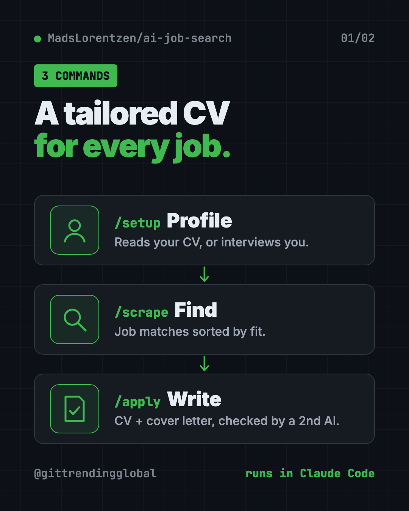
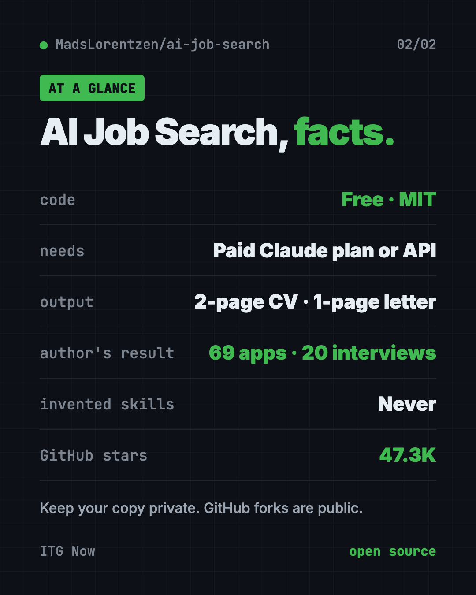

AI Job Search: Tailor Your CV With AI for Every Job (2026)
- Published 15 Oct 2026
- Updated 16 Oct 2026
- 8 min read
- License MIT
- By the ITG Now team
AI Job Search is a free kit that helps you tailor your CV with AI for every job you apply to. It scores job posts, writes a matching CV and cover letter, has a second AI check the work, and preps you for interviews.
It runs on your own computer inside Claude Code. The project has about 47.3K stars on GitHub.
Key takeaways
- Built by a job seeker, for job seekers. The author used it for 69 applications, got 20 first interviews, and was hired as an AI engineer in June 2026.
- One command per job. Type
/applywith a job link and get a tailored CV and cover letter as PDFs. - Two AIs, not one. A second "reviewer" AI researches the company and critiques the draft before you see it.
- Never makes things up. The README says all claims are checked against your real profile.
- The code is free (MIT), but Claude Code is not. You need a paid Claude plan or Anthropic API credits.
What is AI Job Search?
Job hunting is a second full-time job. Every posting wants a slightly different CV. Every application wants a fresh cover letter. Do that 50 times and your evenings vanish.
AI Job Search turns Claude Code into a job application helper. Claude Code is Anthropic's AI assistant that works inside your computer's terminal.
You fill in your profile once. After that, the kit can search job boards, score each job against your profile, and write tailored documents.
The author, Mads Lorentzen, is a geophysicist whose job was cut in late 2025. He built this to run his own search. In his words, "It got me hired. Now it's yours."

How does AI Job Search work?
There are three main commands:
/setupbuilds your profile. It can read your old CV, your LinkedIn export and diplomas, or just interview you./scrapesearches job boards and shows matches sorted by fit./applydoes the heavy lifting for one job.
That last step is where you tailor your CV with AI, one job at a time.
Here's what /apply does, step by step, per the README:
- Reads the job post.
- Scores your fit on skills, experience, culture, location and career goals.
- Drafts a tailored CV and cover letter.
- Sends them to a reviewer AI that researches the company and suggests fixes.
- Revises, then makes the PDFs. It aims for a 2-page CV and a 1-page cover letter.
- Checks that applicant tracking systems (the robots that screen CVs) can read your CV.
Keywords you really have get added. Gaps stay visible. The README says it never stuffs in skills you don't have.
How to use AI Job Search (real examples)
- Apply to a dream job tonight. Paste the job link after
/apply. Review the CV and cover letter it makes, tweak, and send. - Sort 40 new postings fast. Run
/scrape, then/rankto get a shortlist with honest strengths and gaps for each job. - Prep for Thursday's interview.
/interviewbuilds a prep pack with likely questions, your best stories, and an optional mock interview. - Follow up without awkwardness.
/outcome followupdrafts short follow-up notes for applications that went quiet. It only drafts. It never sends. - Plan your next skill.
/upskillcompares your profile with the jobs you want and builds a learning plan.
💡 Tip: The more you put into
/setup, the better every CV gets. Drop in your full CV, LinkedIn export and a few past applications, not just a short summary.
Is AI Job Search free?
The kit itself is free and open source under the MIT license.
But it runs on Claude Code, and the README is clear: "Claude Code has no free tier." You need a Claude Pro, Max or Team plan, or pay-as-you-go Anthropic API credits. The README says API credits are usually cheaper if you only apply now and then.
Using another AI helper like Codex or Gemini CLI? The README says the job search parts work there, and community versions adapt the full workflow.
⚠️ Heads up: The README warns that this project has no crypto token or paid sponsorship. Anything claiming otherwise is a scam. The only support options are Ko-fi and GitHub.
Does it work outside Denmark?
Yes, with one catch. The main workflow works in any country and language. But the built-in job board searches are for Danish sites like Jobindex and Jobnet.
For everyone else, the kit includes a LinkedIn public jobs search that works for any location, and a tech job search through freehire.me. You can also type /add-portal and give it your local job board. It builds a search tool for that site and tests it.
The README notes the LinkedIn search is for personal use only, since automated access breaks LinkedIn's terms. Keep it light.
AI Job Search at a glance
| Price | Free code; needs a paid Claude plan or API credits |
| Works offline | No, Claude Code runs online |
| Platforms | Mac, Windows, Linux |
| License | MIT (open source) |
| Needs | Claude Code, Python 3.10+, Bun, LaTeX |
| Output | Tailored CV (2 pages) and cover letter (1 page) as PDFs |
| Best for | Job seekers sending many applications |

How to install AI Job Search
First, you need these on your computer:
- Claude Code with a paid plan or API credits.
- Python 3.10 or newer.
- Bun, a free tool that runs the job search helpers.
- LaTeX, free software that makes the PDF documents (MacTeX on Mac, MiKTeX or TeX Live on Windows).
Step 1. Get the project. The README's command is:
gh repo fork MadsLorentzen/ai-job-search --clone
cd ai-job-search
⚠️ Heads up: The README warns that a GitHub fork is always public, and
/setupwrites your name, contact details, job history and salary hopes into it. For your own job search, use a private copy. The setup guide says keeping it only on your computer, without pushing, is also fine.
Step 2. Install the job search tools. Copy and paste this:
python3 tools/install_portal_clis.py
On Windows, use python tools\install_portal_clis.py instead.
Step 3. Start Claude Code and build your profile. Copy and paste this:
claude
Then type /setup inside Claude Code.
Step 4. Find jobs with /scrape, then apply to one with:
/apply https://jobindex.dk/job/1234567
Swap in your own job link. If a site blocks it, paste the full job description after /apply instead.
Let Claude or Codex set it up for you
Claude Code is Anthropic's AI helper and OpenAI Codex is OpenAI's. Both run setup steps on your computer. You paste a request and approve each step.
Copy and paste this into Claude Code:
Help me set up AI Job Search from github.com/MadsLorentzen/ai-job-search.
1. Check that I have Python 3.10+, Bun and LaTeX. Help me install what's missing.
2. Get the project as a PRIVATE copy, not a public fork, because it will hold my personal data.
3. Run the job search tools installer from the README.
4. Explain each step in plain words before you run it.
5. Then start /setup and use the CV in my documents folder.
Then try asking:
/apply <paste the full job description here>
/rank my newest scraped jobs and show me the top 5 with honest gaps.
I live outside Denmark. Use /add-portal to add my country's main job board.
Our take
AI Job Search is one of the most practical AI projects on GitHub. It was built under real pressure by someone who needed a job, and it shows.
What we like:
- A real track record from the author's own search.
- A second AI reviewer catches weak spots before you send.
- Strict honesty: no invented skills or experience.
- Careful PDF checks, so your CV is readable by screening software.
- Thoughtful safety notes, from private data to scam warnings.
What to watch for:
- Needs a paid Claude plan or API credits.
- Setup asks for several tools: Python, Bun and LaTeX.
- Built-in job boards are Danish. Others need LinkedIn, freehire or
/add-portal. - Forks are public. Keep your copy private.
Want a second opinion on which jobs to skip? Read our Career-Ops guide. Prefer to talk your cover letter out loud? Try Handy, free offline voice typing. AI Job Search also made our top 5 GitHub repos of July 2026.
FAQ
Can I tailor my CV with AI for free?
The AI Job Search code is free, but it needs Claude Code, which has no free tier. You need a paid Claude plan or Anthropic API credits.
Does AI Job Search make things up on my CV?
No. The README says every claim is checked against your real profile, and it never invents skills or experience.
Does AI Job Search send applications for me?
No. It drafts CVs, cover letters and follow-ups. You review and send them yourself.
Does it work in my country?
The main workflow works anywhere. Built-in job board searches are Danish, but there's a LinkedIn search for any location and /add-portal for your local board.
Is my personal data safe?
Everything runs on your computer. But a GitHub fork is public, so keep your copy private or don't push it online.
Can I use it with Codex instead of Claude?
Partly. The README says the job search parts work in Codex and Gemini CLI, and community versions adapt the full workflow.
Get AI Job Search: github.com/MadsLorentzen/ai-job-search
Latest AI news
- Meta gives away its big Muse Spark AI for free
- Google launches TorchTPU to rival Nvidia
- ChatGPT adds PIN-locked chats
- NVIDIA releases Cosmos3-H-Dreams surgery simulator
Keep reading

VoiceStudio: Free ElevenLabs Alternative
VoiceStudio is a free ElevenLabs alternative. Clone a voice, dub videos and turn text into speech on your own Mac, Windows or Linux computer.

Folia: Free Animated Lyrics Music Player
Folia is a free animated lyrics music player that shows full-screen moving lyrics for your local music, Navidrome and more. What it does and how to start.

net-merge: Combine Wi-Fi and Phone Internet, Free
net-merge is a free app to use two internet connections at once, like Wi-Fi plus a phone hotspot, on Windows, Mac and Linux. No account or VPN.